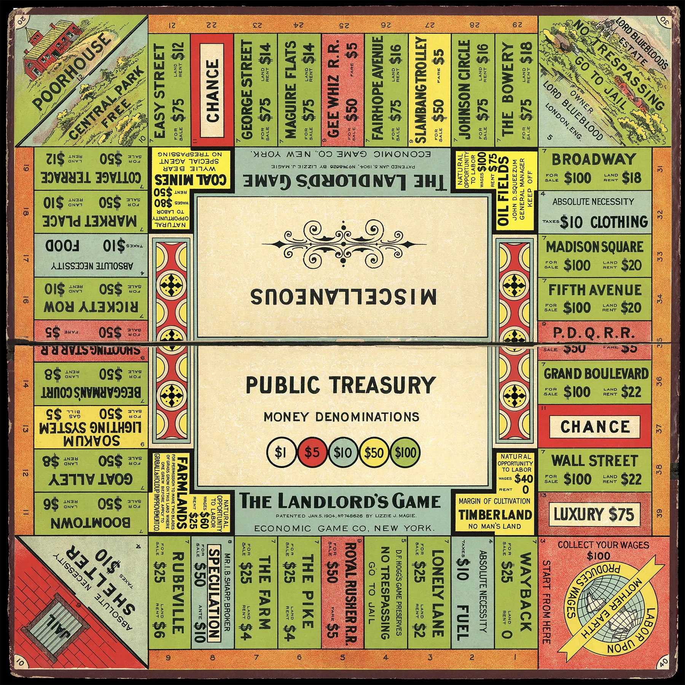

The organization of the designed system.
The human experience of that system.
The larger contexts engaged with and inhabited by the system.
“When play occurs, it can overflow and overwhelm the more rigid structure in which it is taking place, generating emergent, unpredictable results. Sometimes, in fact, the force of play is so powerful that it can change the structure itself. As philosopher James S. Hans notes, ‘The role of play is not to work comfortably within its own structures but rather constantly to develop its structures through play.’ A playful slang term can become an idiom, for example, and may eventually be adopted into the dictionary, becoming part of the larger cultural structures it originally resisted. We call this important form of play transformative play.
Transformative play is a special case of play that occurs when the free movement of play alters the more rigid structure in which it takes shape. The play doesn’t just occupy and oppose the interstices of the system, but actually transforms the space as a whole. A cyberfeminist game patch that creates transsexual versions of Lara Croft is an example of transformative play, as is the use of the Quake game engine as a movie-making tool.”
— Katie Salen & Eric Zimmerman, Rules of Play (2003)

“Game play takes place within a representational universe, filled with depictions of objects, interactions, and ideas out of which a player makes meaning. In Rock-Paper-Scissors a fist means ‘rock,’ an outstretched hand means ‘paper,’ and two fingers spread in a V-shape means ‘scissors.’ In the game of Mafia, an assassin’s hand gesture that points to another player represents ‘kill!’ and the act of keeping one’s eyes closed ‘at night’ marks a player as ‘villager.’ In a first-person shooter, the gun barrel emerging out of the bottom of the screen represents not only ‘a big-ass gun,’ but also denotes ‘you,’ the player.
To play a game is to rely on and interact with representations the game generates. This intersection between representation, meaning, and play raises a series of important game design questions. How does a player experience the representation of a game? What is the relationship between a game representation and the ‘real world?’ What modes of representation can games provide?”
— Katie Salen & Eric Zimmerman, Rules of Play (2003)
“Any game that establishes a strong presence in culture immediately engages with innumerable cultural structures. Take Basketball, for example. With what contexts outside of the magic circle does the game connect? We could consider the roles of players, coaches, referees, cheerleaders, or fans, each of whom affects the cultural identity and experience of the game. There is the physical context of the arena to consider, as well as the roles of the vendors, technicians, ticket scalpers, and mascots. What about the context of the media, including television and radio announcers, newspapers, satellite broadcasting, and Pay-Per-View TV? Or the economics that make the game possible, from ticket and licensed t-shirts sales to the negotiation of player salaries? Then there are the professional organizations that regulate and administrate the game.
For fans or players of the game, Basketball can also be a context for establishing social status, group affiliation, cultural identity, or access to a college education. Every one of these elements contributes to the overall cultural significance of the game. Whether players and spectators realize it or not, when they play or watch a game they are taking part in generating, embodying, and transforming these cultural meanings. These meanings are not fixed, but are always in some way ‘at play’ within existing cultural structures.”
— Katie Salen & Eric Zimmerman, Rules of Play (2003)
Somewhere, a hero is saving the world. You are not that hero.
The henchman guarding the door. The shopkeeper who sells the sword. The villager who gets rescued. The janitor after the boss fight. The NPC standing exactly where the level designer put you.
The only wrong interpretation is one we can’t find in your rules.
Design toward it, or critique and subvert it, but show it working in your rules.
Most rhetorics assume the player is the center of the story.
What does Power look like for the minion who never gets promoted?
Pick a rhetoric, then look at it from the edge of the frame.
❌ “Save the village? Yes / No”
✅ Reaching the village before the timer runs out because you took the dangerous upper path
Start talking to potential teammates today.